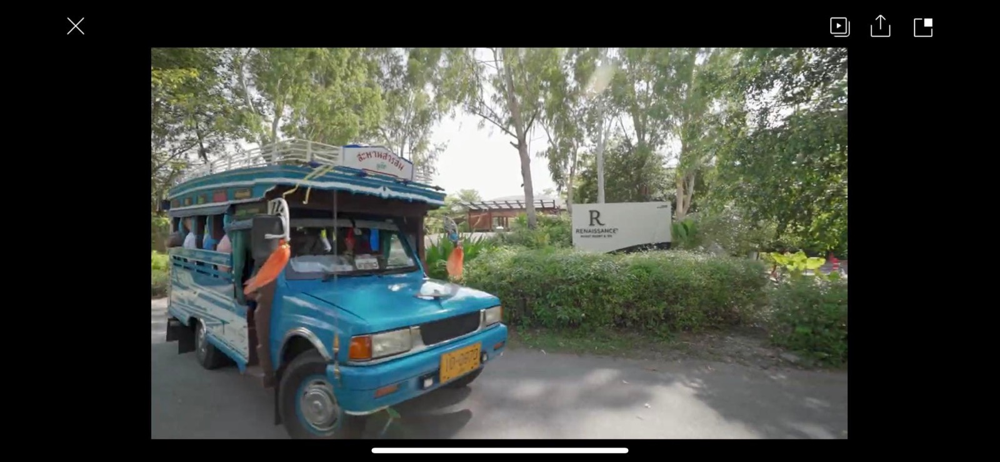
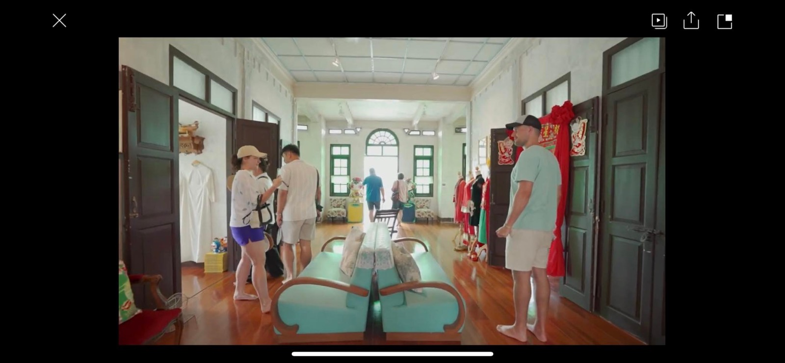
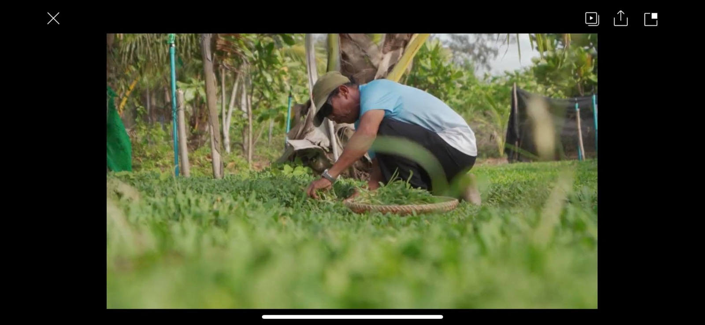
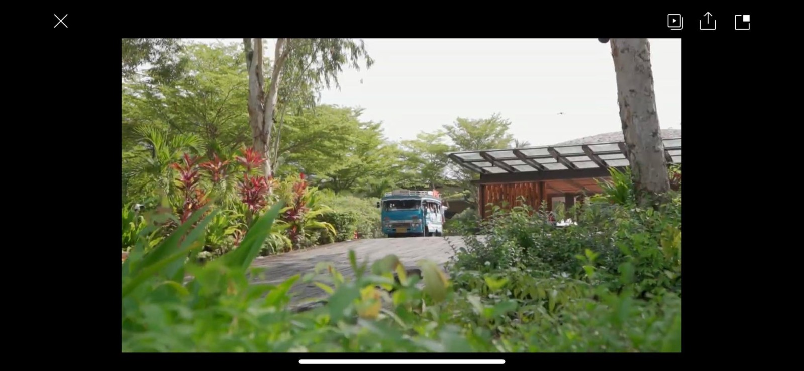

2566 · สังคม · บันทึกย่อย
Renaissance Phuket ถ่ายคลิปโปรโมทท่องเที่ยวชุมชนไม้ขาว มีบ้านอาจ้อร่วมด้วย




มาเที่ยวไม้ขาว-ภูเก็ตกัน ของดีเพียบบบ 🥰🎉
ขอบคุณ รร #renaissancephuket สำหรับคลิปโปรโมทท่องเที่ยวชุมชนไม้ขาว และมีบ้านอาจ้อเป็นหนึ่งในสถานที่ท่องเที่ยวนะครับ 🥰
คลิปเดียวมาครบเลย รถโพถ้องชุมชน บ้านอาจ้อ จี้จุ๋มไกด์กิตติมศักดิ์ 😆✨ หาดไม้ขาวธรรมชาติครบ ชุมชนผักลิ้นห่านผักพื้นถิ่นไม่มีสารเคมี กิจกรรมจับจั๊กจั่นทะเล ลิ้มลองรสชาติวัตถุดิบชมชน ปาร์ตี้ริมทะเลช่วงพลบค่ำ ฟินแบบนี้ครบจบที่เดียว ไม้ขาวภูเก็ต 🌊
#เกื้อหนุนกัน 💕
#เรอเนซองค์ ✨
#บ้านอาจ้อ 🧧